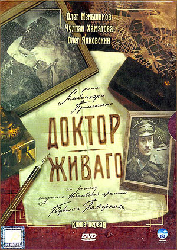

Groups of The Third Wave
Russians in America: The Third Wave
Groups and Organizations

Groupings
Russians in the United States repeated the experience of their predecessors and found like-minded individuals under already existing or newly formed groups. NAYANA, The Association of Russian-American Scholars in the USA, but also the new Club of Russian Writers in New York provided opportunites to meet and discuss literature.
Club of Russian Writers / Клуб русских писателй в Нью Йорке
Centered around Columbia University where Professor Robert Belknap offered official sponsorship that provided a meeting room, Evgeny Lubin (Любин Евгений) and Eugenia Dimer(Димер Евгения) sponsored and continue to maintain an organization and an almanac that gives a place for Russian writers to express themselves. Belknap recalls that anywhere from 30 to 40 people would gather at Columbia for the meetings. Viktor Urin (Урин Виктор) and Lev Khalif (Халиф Лев) would come. Professor Cathy Nepomnyaschy was the first "secretary" of the club. Mikhail Morgulis (Моргулис Михаил) was also close to the group, and would work as editor of Литературный курьер. The group continues today and recently published a retrospective in Альманах 2007.
Новая Газета , II, 96. (March 6-12, 1982). p. 2 Documents the three years of "Клуб русскихп исателей." pp. 15, 16, 17. it publishes in its entirety the "Литературный вестник Клуба русских писателей " The Literary Bulletin of the Russian Writers' Club, New York, выпуск второй./ P. 15 Е.Л[юбин]. It has a note on emigre writers (p. 18) and sums up the club's accomplishments.
Published: Литературный вестник and Альманах-80.
Published books by Евгения Димер, Лев Халиф, Александр Басков, Александр Сиротин, Евгений Любин, Белла Езерская.
Several editors had visited and spoke: Геннадий Андреев, Виктор Перельман, Аркадий Ровнер, Евгений Рубин, Людмила Кафанова.
Writers included (among others): Аркадий Львов, Вяческва Завалышин, Лев Наврозов, Юз Алешковский, Иосиф Бродский.
[All these people except Brodsky were close to Columbia University and to Новая Газета, versus the Новый Американец crowd].
Congress of American Russians
They published (and it continues to today from San Francsico) Русский Американец. Published by Congress of Russian Americans (founded 1973). A review issue, NO 18 (1982-1985) pp. 1-8 documents the organization's activities. Special Overview issue No 18 (1982-1985), p. 2. "The Congress of Russian-Americans is not an emigre organization. It is an American organization."
Cultural Resistance Foundation
212 677-1653? What is known of it? It was located at 209 E. 14ht Street, NY NY 10003. Was this the same address as Any Phototype that published Новая Газета?
The Gratitude Fund. Established to provide economic support for those who defended human rights in thеir homeland and many of who are impoverished. The site connects to a list of those who have passed away and provides links to other organizations supporting their cause.
Litfond
Headed by Sedykh of Новое Русское Слово, on Riverside Drive and Broadway at 108th Street. What did it do? Does it still exist? Fund for the Relief of Russian Writers and Scientists in Exile, established 1918, 461 8th Avenue, NY NY 10001
NAYANA
The New York Association for New Americans. The major Jewish relief organziation involved with easing the transtion of Russian Jewish emigrees to American life. Its contributions should not be ignored. At 2 Washington Street, NY NY (212 425 2900). The organization likely was the source of the name for the newspaper Новый Американец.
Also check with the Council of Jewish Emigre Community Organziations (COJECO) www.cojeco.org (212 566-2120)
Jewish Union of Russian Immigrants
(JURI) was founded in 1980 as an organization to help Russian-speaking Jewish immigrants from the Soviet Union retrain, resettle, and become integrated into American culture. Today the foundation's mission is to educate people about Jewish culture and show people Jewish places of historical significance in New York. 212 964-1524.
Tolstoy Foundation
In 1972, the Tolstoy Foundation joined the U.S. Department of State's Refugee Resettlement Program and assisted in the resettlement of refugees from all over the world to the U.S., including Russian Jews, primarily those in mixed marriage. Contact Robert Whittaker, 718-960-7806 Professor of Journalism Communications and Theatre (rwhittaker@rusinc.net ; robert.whittaker@lehman.cuny.edu).
Who, What, Where and When?
Internet Links
Другие Ссылки